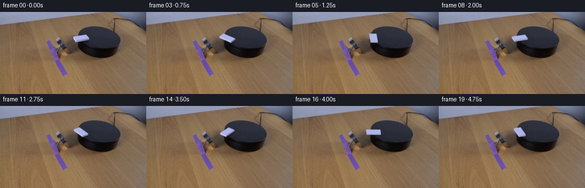
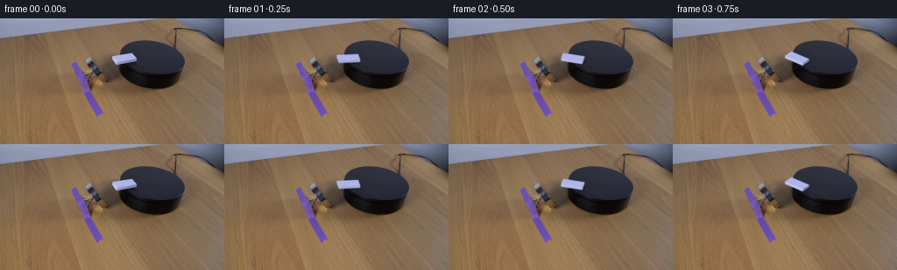
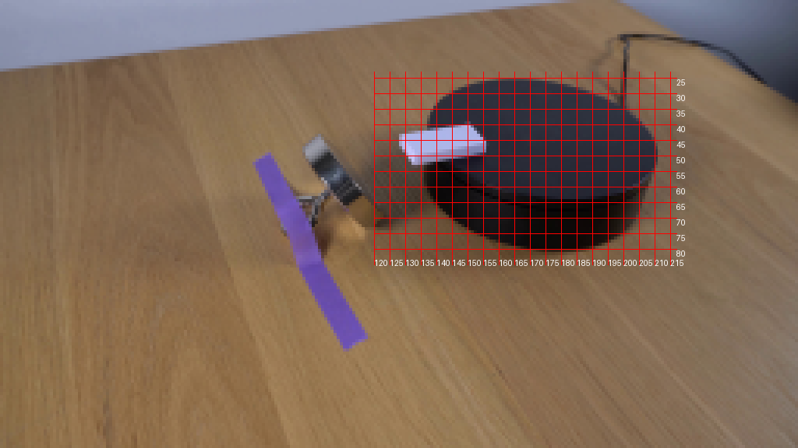
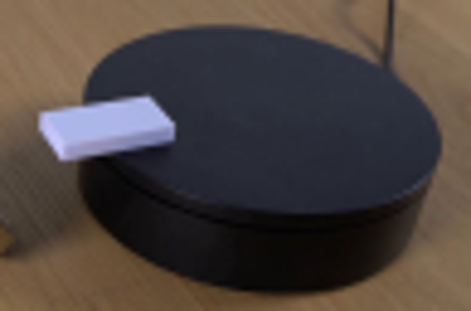
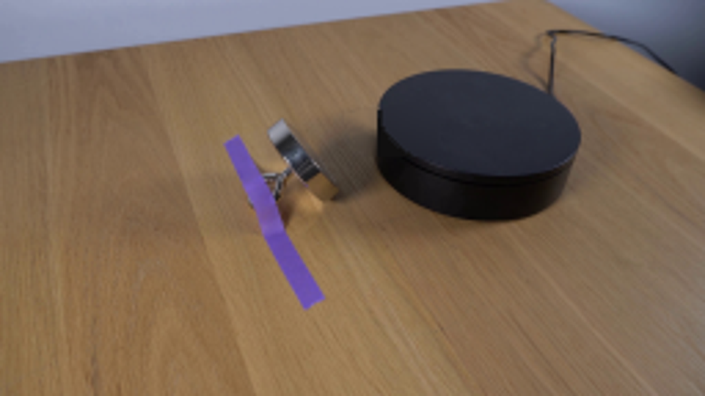
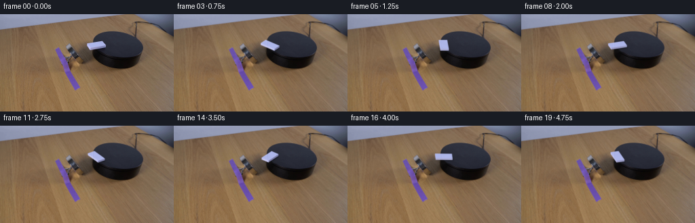
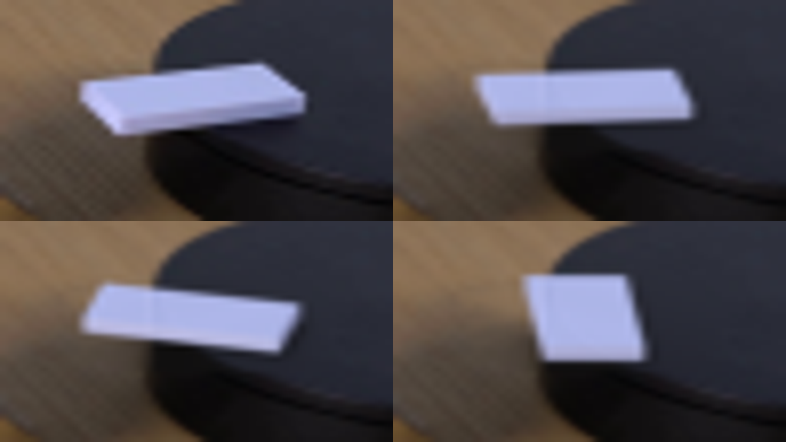
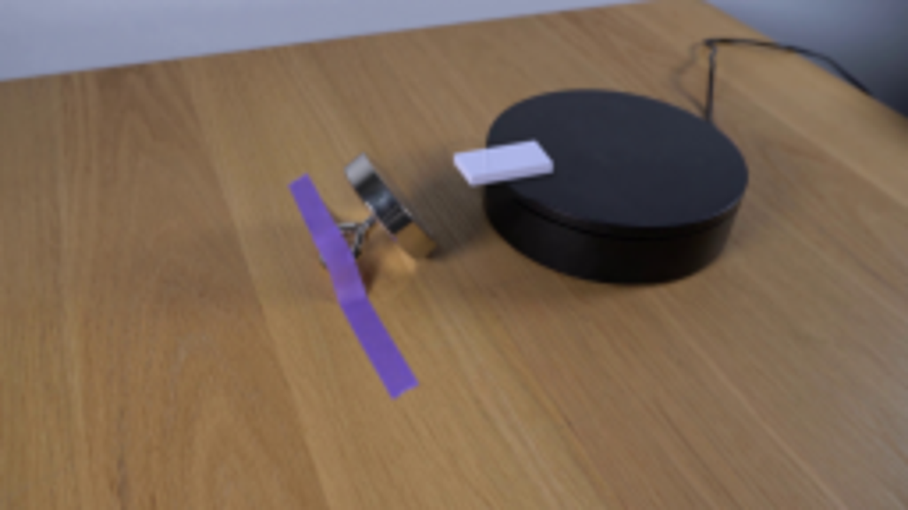

CODING AGENTS AS PIXEL WORLD MODELS
traex/GPT-6.1-Sol · 0094
点击播放 · 原生 RGB 像素
此结果可播放，但该运行尚未通过最终提交审核。页面展示不代表评测通过。
逐轮保存的候选
回放视频、检查图与代码变化。
每份候选均可单独播放。实际图片检查记录在下方工具轨迹中。
候选 01播放与检查图
点击播放 · 原生 RGB 像素

展开代码变化
--- 上一保存版本
+++ 本次保存版本
@@ -0,0 +1,140 @@
+from pathlib import Path
+import numpy as np
+import cv2
+from PIL import Image
+from scipy.ndimage import gaussian_filter
+import artifact_io
+
+ROOT = Path(__file__).resolve().parent
+SCALE = 6
+W, H = 256, 144
+
+
+def polygon_mask(points, scale=SCALE):
+ m = np.zeros((H * scale, W * scale), np.uint8)
+ cv2.fillPoly(m, [np.rint(np.asarray(points) * scale).astype(np.int32)], 255, lineType=cv2.LINE_AA)
+ return m.astype(np.float32) / 255
+
+
+def prepare_background(original):
+ y, x = np.mgrid[:H, :W]
+ # Occluded part of the fixed pedestal and table is reconstructed locally.
+ erase = np.zeros((H, W), np.uint8)
+ cv2.fillPoly(erase, [np.rint([[127, 42], [150.8, 38.5], [157, 44.4], [157, 50.5], [134, 54], [129, 51]]).astype(np.int32)], 255)
+ erase = cv2.dilate(erase, np.ones((3, 3), np.uint8))
+ erase[(x >= 136) & (x <= 157) & (y >= 49) & (y <= 55)] = 255
+ basic = cv2.inpaint(original, erase, 4, cv2.INPAINT_TELEA).astype(np.float32)
+ yy, xx = np.mgrid[:H*SCALE, :W*SCALE].astype(np.float32)
+ xx = (xx + .5) / SCALE - .5
+ yy = (yy + .5) / SCALE - .5
+ angle = np.deg2rad(9.507)
+ u = (x - 173.073) * np.cos(angle) + (y - 45.417) * np.sin(angle)
+ v = -(x - 173.073) * np.sin(angle) + (y - 45.417) * np.cos(angle)
+ top = (u / 36.5475)**2 + (v / 18.646)**2 < 1
+ features = np.stack([np.ones_like(x), (x-173)/40, (y-45)/20, ((x-173)/40)**2, ((y-45)/20)**2, (x-173)*(y-45)/800], -1)
+ valid = top & (erase == 0) & (x > 143) & (y < 58)
+ coefficients = np.linalg.lstsq(features[valid], original[valid].astype(float), rcond=None)[0]
+ f = np.stack([np.ones_like(xx), (xx-173)/40, (yy-45)/20, ((xx-173)/40)**2, ((yy-45)/20)**2, (xx-173)*(yy-45)/800], -1)
+ top_color = np.clip(f @ coefficients, 0, 255).astype(np.float32)
+ hu = (xx - 173.073) * np.cos(angle) + (yy - 45.417) * np.sin(angle)
+ hv = -(xx - 173.073) * np.sin(angle) + (yy - 45.417) * np.cos(angle)
+ radius = np.sqrt((hu / 36.5475)**2 + (hv / 18.646)**2)
+ top_mask = radius <= 1
+ cylinder = np.zeros_like(top_mask)
+ for rise in np.linspace(0, 14, 45):
+ su = (xx - 173.073 + .5*rise/14) * np.cos(angle) + (yy - 45.417-rise) * np.sin(angle)
+ sv = -(xx - 173.073 + .5*rise/14) * np.sin(angle) + (yy - 45.417-rise) * np.cos(angle)
+ cylinder |= (su / 36.5475)**2 + (sv / 18.646)**2 <= 1
+ # The black cylindrical skirt and slightly darker rolled edge.
+ cylinder_color = np.empty_like(top_color)
+ cylinder_color[:] = [16, 15, 15]
+ cylinder_color += np.clip((xx-139)/8, 0, 1)[...,None] * np.array([2, 2, 3])
+ edge = (hv > 0) & (radius > .978)
+ top_color[edge] *= .77
+ up = cv2.resize(basic, (W*SCALE,H*SCALE), interpolation=cv2.INTER_CUBIC)
+ a = gaussian_filter(top_mask.astype(np.float32), .40*SCALE)
+ cy = gaussian_filter(cylinder.astype(np.float32), .42*SCALE)
+ generated = up*(1-cy[...,None]) + cylinder_color*cy[...,None]
+ generated = generated*(1-a[...,None]) + top_color*a[...,None]
+ affected = cv2.resize(erase.astype(np.float32)/255, (W*SCALE,H*SCALE), interpolation=cv2.INTER_LINEAR)
+ affected = gaussian_filter(affected, .35*SCALE)
+ pristine = cv2.resize(original.astype(np.float32), (W*SCALE,H*SCALE), interpolation=cv2.INTER_CUBIC)
+ bg = pristine*(1-affected[...,None]) + generated*affected[...,None]
+ return bg.astype(np.float32), a, cy, xx, yy
+
+
+def render(bg, top_mask, cylinder_mask, xgrid, ygrid, angle):
+ # Plane projection inferred from the four corners of the first-frame domino.
+ projection = np.array([[11.4,4.8],[-1.9,6.2]], dtype=np.float64)
+ c,s = np.cos(angle), np.sin(angle)
+ rotation = np.array([[c,-s],[s,c]])
+ transform = projection @ rotation
+ center = np.array([141.8,44.65])
+ world = np.array([[-1,-.5],[1,-.5],[1,.5],[-1,.5]], dtype=np.float64)
+ points = world @ transform.T + center
+ feet = points + [0,2.6]
+ out = bg.copy()
+ # The low contact shadow follows the domino rather than remaining at its old position.
+ contact = polygon_mask(feet + [0.65,.65])
+ contact = gaussian_filter(contact, .60*SCALE)
+ out *= 1 - (.40*contact*top_mask)[...,None]
+ soft = gaussian_filter(polygon_mask(feet + [1.0,1.0]), 1.15*SCALE)
+ out *= 1 - (.20*soft*top_mask)[...,None]
+ # Shadow falling beyond the pedestal is lower on the table.
+ table_shadow = gaussian_filter(polygon_mask(feet + [3.8,14.0]), 2.15*SCALE)
+ out *= 1 - (.15*table_shadow*(1-cylinder_mask))[...,None]
+ # Visible faces of a short plastic rectangular prism.
+ light = np.array([-.925,.38])
+ for i in range(4):
+ j = (i+1)%4
+ if points[j,0] - points[i,0] > 0:
+ continue
+ quad = np.array([points[i],points[j],feet[j],feet[i]])
+ face_alpha = polygon_mask(quad)
+ direction = rotation @ (world[j]-world[i])
+ normal = np.array([direction[1],-direction[0]]) / np.linalg.norm(direction)
+ lambert = max(0.0,float(normal@light))
+ color = np.array([119,120,160]) + 76*lambert
+ # Soft falloff toward the bottom of the plastic; tiny warm reflected-light gradient.
+ dx,dy = points[j]-points[i]
+ local_y = (ygrid-points[i,1]) - (xgrid-points[i,0])*dy/(dx+1e-10)
+ vertical = np.clip(local_y/2.6,0,1)
+ face_color = color[None,None,:] + (1-vertical[...,None])*5.0 - vertical[...,None]*4
+ face_color += np.clip((142-xgrid)/20,-1,1)[...,None]*np.array([4,1,0])
+ out = out*(1-face_alpha[...,None])+face_color*face_alpha[...,None]
+ # Flat lightly cool white plastic surface, with subtle molded rim and minute texture.
+ alpha = polygon_mask(points)
+ inv = np.linalg.inv(transform)
+ local_x = inv[0,0]*(xgrid-center[0])+inv[0,1]*(ygrid-center[1])
+ local_y = inv[1,0]*(xgrid-center[0])+inv[1,1]*(ygrid-center[1])
+ dist = np.minimum((1-np.abs(local_x))*11.6, (.5-np.abs(local_y))*8)
+ rim = np.exp(-np.maximum(dist,0)/.23)
+ brightness = 1.2*np.sin(local_x*4.6 + local_y*3.1) + .45*np.sin(local_x*45+local_y*34)
+ surface = np.empty_like(out)
+ surface[:] = [173.0,181.3,231.9]
+ surface += brightness[...,None] * np.array([.6,.6,.8])
+ surface += rim[...,None]*np.array([6.0,5.5,6.0])
+ out = out*(1-alpha[...,None])+surface*alpha[...,None]
+ # Match the mild original photographic point-spread at this very small resolution.
+ diff = gaussian_filter(out-bg, sigma=(.32*SCALE,.32*SCALE,0))
+ out = bg+diff
+ return cv2.resize(np.clip(out,0,255), (W,H), interpolation=cv2.INTER_AREA)
+
+
+def main():
+ first = np.array(Image.open(ROOT/'first_frame.png').convert('RGB'))
+ bg, top, cy, xx, yy = prepare_background(first)
+ # Moderate continuous clockwise rotation, approximately one and a quarter turns.
+ frames = [first]
+ for index in range(1,20):
+ t = index/4
+ theta = 1.72*(t-.16*(1-np.exp(-t/.16)))
+ # Brief shutter integration, while retaining a readable rotating solid.
+ result = np.mean([render(bg,top,cy,xx,yy,theta+dt*1.72) for dt in [-.009,0,.009]],axis=0)
+ frames.append(np.clip(np.rint(result),0,255).astype(np.uint8))
+ frames = np.stack(frames)
+ artifact_io.save(frames, ROOT)
+ Image.fromarray(np.clip(cv2.resize(bg,(W,H),interpolation=cv2.INTER_AREA),0,255).astype(np.uint8)).save(ROOT/'.tmp/background.png')
+
+if __name__ == '__main__':
+ main()
候选 02播放与检查图
点击播放 · 原生 RGB 像素


展开代码变化
--- 上一保存版本
+++ 本次保存版本
@@ -124,6 +124,10 @@
def main():
first = np.array(Image.open(ROOT/'first_frame.png').convert('RGB'))
bg, top, cy, xx, yy = prepare_background(first)
+ pristine_high = cv2.resize(first.astype(np.float32), (W*SCALE,H*SCALE), interpolation=cv2.INTER_CUBIC)
+ # Never resample the unchanging photographed scene: only add the local edits.
+ static_correction = first.astype(np.float32) - cv2.resize(pristine_high, (W,H), interpolation=cv2.INTER_AREA)
+ static_correction[38:57,125:160] = 0
# Moderate continuous clockwise rotation, approximately one and a quarter turns.
frames = [first]
for index in range(1,20):
@@ -131,6 +135,7 @@
theta = 1.72*(t-.16*(1-np.exp(-t/.16)))
# Brief shutter integration, while retaining a readable rotating solid.
result = np.mean([render(bg,top,cy,xx,yy,theta+dt*1.72) for dt in [-.009,0,.009]],axis=0)
+ result += static_correction
frames.append(np.clip(np.rint(result),0,255).astype(np.uint8))
frames = np.stack(frames)
artifact_io.save(frames, ROOT)
候选 03播放与检查图
可观测工具轨迹
实际执行的命令与返回图片。
命令 1exit 0
/bin/bash -lc "ls -la && cat prompt.txt && printf '\\n---RULES---\\n' && cat GENERATION_RULES.md"
命令 2exit 0
/bin/bash -lc "cat artifact_io.py && python - <<'PY'
from PIL import Image
im=Image.open('first_frame.png');im.resize((1024,576)).save('.tmp/large.png')
PY"命令 3exit 0
/bin/bash -lc "python - <<'PY'
import importlib.util
for mod in ['cv2','scipy','numpy']:
print(mod,bool(importlib.util.find_spec(mod)))
from PIL import Image
im=Image.open('first_frame.png');im.crop((119,30,166,64)).resize((752,544)).save('.tmp/crop.png')
PY"命令 4exit 0
/bin/bash -lc "python - <<'PY'
from PIL import Image,ImageDraw
im=Image.open('first_frame.png').resize((1024,576),Image.Resampling.NEAREST)
d=ImageDraw.Draw(im)
for x in range(120,217,5):
d.line((x*4,23*4,x*4,85*4),fill=(255,0,0),width=1);d.text((x*4,83*4),str(x),fill=(255,255,255))
for y in range(25,81,5):
d.line((120*4,y*4,217*4,y*4),fill=(255,0,0),width=1);d.text((217*4,y*4),str(y),fill=(255,255,255))
im.save('.tmp/grid.png')
PY"命令 5exit 0
/bin/bash -lc "python - <<'PY'
from PIL import Image
import numpy as np
im=np.array(Image.open('first_frame.png'))
for y in [39,40,41,42,43,44,45,46,47,48,49,50,51,52,53,54]:
print(y,[(x,im[y,x].tolist()) for x in [127,129,131,133,137,141,145,149,152,155,157]])
PY"命令 6exit 0
/bin/bash -lc "python - <<'PY'
from PIL import Image
Image.open('first_frame.png').crop((120,20,217,84)).resize((970,640)).save('.tmp/platform.png')
PY"命令 7exit 0
/bin/bash -lc "python - <<'PY' import cv2,numpy as np pts=np.array([[138,36],[144,31],[154,27],[164,25.6],[174,26.7],[185,29.5],[197,35],[206,41.5],[211,49],[207,56],[198,60.7],[188,64.1],[177,65.1],[166,63.5],[155,59.5],[146,54],[139,47],[136.8,41]],np.float32) print(cv2.fitEllipse(pts)) PY"
命令 8exit 0
/bin/bash -lc "cat > .tmp/test_bg.py <<'PY'
import numpy as np, cv2
from PIL import Image
from scipy.ndimage import gaussian_filter
im=np.array(Image.open('first_frame.png'))
h,w=im.shape[:2];Y,X=np.mgrid[:h,:w]
a=np.deg2rad(9.5);u=(X-173.07)*np.cos(a)+(Y-45.42)*np.sin(a);v=-(X-173.07)*np.sin(a)+(Y-45.42)*np.cos(a)
top=(u/36.55)**2+(v/18.65)**2 <=1
mask=np.zeros((h,w),np.uint8)
cv2.fillPoly(mask,[np.round(np.array([[126.5,42],[150.8,38.5],[157,44.4],[157,50.6],[134,54.6],[129,51]])).astype(np.int32)],255)
mask=cv2.dilate(mask,np.ones((3,3),np.uint8),iterations=1)
# Remove shadow on platform
mask[(X>=136)&(X<=158)&(Y>=49)&(Y<=56)] =255
b=cv2.inpaint(im,mask,4,cv2.INPAINT_TELEA).astype(float)
valid=top&(mask==0)&(X>142)&(Y<59)
f=np.stack([np.ones_like(X),(X-173)/40,(Y-45)/20,((X-173)/40)**2,((Y-45)/20)**2,(X-173)*(Y-45)/800],axis=-1)
coef=np.linalg.lstsq(f[valid],im[valid].astype(float),rcond=None)[0]
col=f@coef
sel=top&(mask>0)
b[sel]=col[sel]
# cylinder swept ellipse
cy=np.zeros((h,w),bool)
for shift in np.linspace(0,14.0,30):
ux=(X-(173.07-.5*shift/14))*np.cos(a)+(Y-(45.42+shift))*np.sin(a)
vy=-(X-(173.07-.5*shift/14))*np.sin(a)+(Y-(45.42+shift))*np.cos(a)
cy|=(ux/36.55)**2+(vy/18.65)**2<=1
sel=cy&~top&(mask>0)
b[sel]=np.array([16,15,15])
# dark edge within half pixel of top near front
r=np.sqrt((u/36.55)**2+(v/18.65)**2)
sel=top&(v>0)&(r>.965)&(mask>0)
b[sel]=[25,25,28]
Image.fromarray(np.clip(b,0,255).astype(np.uint8)).save('.tmp/bg.png')
Image.fromarray(np.clip(b,0,255).astype(np.uint8)).resize((1024,576)).save('.tmp/bg_large.png')
PY
python .tmp/test_bg.py"命令 9exit 0
/bin/bash -lc "python - <<'PY' import numpy as np L=np.array([22.55,-3.85]);S=np.array([4.55,6.05]);A=np.column_stack([L/2,S]);v,U=np.linalg.eigh(A@A.T) print(A,v,U, 'angle',np.rad2deg(np.arctan2(U[1,1],U[0,1])), 'ratio',np.sqrt(v[0]/v[1])) PY"
命令 10exit 0
/bin/bash -lc "cat > generate.py <<'PY'
from pathlib import Path
import numpy as np
import cv2
from PIL import Image
from scipy.ndimage import gaussian_filter
import artifact_io
ROOT = Path(__file__).resolve().parent
SCALE = 6
W, H = 256, 144
def polygon_mask(points, scale=SCALE):
m = np.zeros((H * scale, W * scale), np.uint8)
cv2.fillPoly(m, [np.rint(np.asarray(points) * scale).astype(np.int32)], 255, lineType=cv2.LINE_AA)
return m.astype(np.float32) / 255
def prepare_background(original):
y, x = np.mgrid[:H, :W]
# Occluded part of the fixed pedestal and table is reconstructed locally.
erase = np.zeros((H, W), np.uint8)
cv2.fillPoly(erase, [np.rint([[127, 42], [150.8, 38.5], [157, 44.4], [157, 50.5], [134, 54], [129, 51]]).astype(np.int32)], 255)
erase = cv2.dilate(erase, np.ones((3, 3), np.uint8))
erase[(x >= 136) & (x <= 157) & (y >= 49) & (y <= 55)] = 255
basic = cv2.inpaint(original, erase, 4, cv2.INPAINT_TELEA).astype(np.float32)
yy, xx = np.mgrid[:H*SCALE, :W*SCALE].astype(np.float32)
xx = (xx + .5) / SCALE - .5
yy = (yy + .5) / SCALE - .5
angle = np.deg2rad(9.507)
u = (x - 173.073) * np.cos(angle) + (y - 45.417) * np.sin(angle)
v = -(x - 173.073) * np.sin(angle) + (y - 45.417) * np.cos(angle)
top = (u / 36.5475)**2 + (v / 18.646)**2 < 1
features = np.stack([np.ones_like(x), (x-173)/40, (y-45)/20, ((x-173)/40)**2, ((y-45)/20)**2, (x-173)*(y-45)/800], -1)
valid = top & (erase == 0) & (x > 143) & (y < 58)
coefficients = np.linalg.lstsq(features[valid], original[valid].astype(float), rcond=None)[0]
f = np.stack([np.ones_like(xx), (xx-173)/40, (yy-45)/20, ((xx-173)/40)**2, ((yy-45)/20)**2, (xx-173)*(yy-45)/800], -1)
top_color = np.clip(f @ coefficients, 0, 255).astype(np.float32)
hu = (xx - 173.073) * np.cos(angle) + (yy - 45.417) * np.sin(angle)
hv = -(xx - 173.073) * np.sin(angle) + (yy - 45.417) * np.cos(angle)
radius = np.sqrt((hu / 36.5475)**2 + (hv / 18.646)**2)
top_mask = radius <= 1
cylinder = np.zeros_like(top_mask)
for rise in np.linspace(0, 14, 45):
su = (xx - 173.073 + .5*rise/14) * np.cos(angle) + (yy - 45.417-rise) * np.sin(angle)
sv = -(xx - 173.073 + .5*rise/14) * np.sin(angle) + (yy - 45.417-rise) * np.cos(angle)
cylinder |= (su / 36.5475)**2 + (sv / 18.646)**2 <= 1
# The black cylindrical skirt and slightly darker rolled edge.
cylinder_color = np.empty_like(top_color)
cylinder_color[:] = [16, 15, 15]
cylinder_color += np.clip((xx-139)/8, 0, 1)[...,None] * np.array([2, 2, 3])
edge = (hv > 0) & (radius > .978)
top_color[edge] *= .77
up = cv2.resize(basic, (W*SCALE,H*SCALE), interpolation=cv2.INTER_CUBIC)
a = gaussian_filter(top_mask.astype(np.float32), .40*SCALE)
cy = gaussian_filter(cylinder.astype(np.float32), .42*SCALE)
generated = up*(1-cy[...,None]) + cylinder_color*cy[...,None]
generated = generated*(1-a[...,None]) + top_color*a[...,None]
affected = cv2.resize(erase.astype(np.float32)/255, (W*SCALE,H*SCALE), interpolation=cv2.INTER_LINEAR)
affected = gaussian_filter(affected, .35*SCALE)
pristine = cv2.resize(original.astype(np.float32), (W*SCALE,H*SCALE), interpolation=cv2.INTER_CUBIC)
bg = pristine*(1-affected[...,None]) + generated*affected[...,None]
return bg.astype(np.float32), a, cy, xx, yy
def render(bg, top_mask, cylinder_mask, xgrid, ygrid, angle):
# Plane projection inferred from the four corners of the first-frame domino.
projection = np.array([[11.4,4.8],[-1.9,6.2]], dtype=np.float64)
c,s = np.cos(angle), np.sin(angle)
rotation = np.array([[c,-s],[s,c]])
transform = projection @ rotation
center = np.array([141.8,44.65])
world = np.array([[-1,-.5],[1,-.5],[1,.5],[-1,.5]], dtype=np.float64)
points = world @ transform.T + center
feet = points + [0,2.6]
out = bg.copy()
# The low contact shadow follows the domino rather than remaining at its old position.
contact = polygon_mask(feet + [0.65,.65])
contact = gaussian_filter(contact, .60*SCALE)
out *= 1 - (.40*contact*top_mask)[...,None]
soft = gaussian_filter(polygon_mask(feet + [1.0,1.0]), 1.15*SCALE)
out *= 1 - (.20*soft*top_mask)[...,None]
# Shadow falling beyond the pedestal is lower on the table.
table_shadow = gaussian_filter(polygon_mask(feet + [3.8,14.0]), 2.15*SCALE)
out *= 1 - (.15*table_shadow*(1-cylinder_mask))[...,None]
# Visible faces of a short plastic rectangular prism.
light = np.array([-.925,.38])
for i in range(4):
j = (i+1)%4
if points[j,0] - points[i,0] > 0:
continue
quad = np.array([points[i],points[j],feet[j],feet[i]])
face_alpha = polygon_mask(quad)
direction = rotation @ (world[j]-world[i])
normal = np.array([direction[1],-direction[0]]) / np.linalg.norm(direction)
lambert = max(0.0,float(normal@light))
color = np.array([119,120,160]) + 76*lambert
# Soft falloff toward the bottom of the plastic; tiny warm reflected-light gradient.
dx,dy = points[j]-points[i]
local_y = (ygrid-points[i,1]) - (xgrid-points[i,0])*dy/(dx+1e-10)
vertical = np.clip(local_y/2.6,0,1)
face_color = color[None,None,:] + (1-vertical[...,None])*5.0 - vertical[...,None]*4
face_color += np.clip((142-xgrid)/20,-1,1)[...,None]*np.array([4,1,0])
out = out*(1-face_alpha[...,None])+face_color*face_alpha[...,None]
# Flat lightly cool white plastic surface, with subtle molded rim and minute texture.
alpha = polygon_mask(points)
inv = np.linalg.inv(transform)
local_x = inv[0,0]*(xgrid-center[0])+inv[0,1]*(ygrid-center[1])
local_y = inv[1,0]*(xgrid-center[0])+inv[1,1]*(ygrid-center[1])
dist = np.minimum((1-np.abs(local_x))*11.6, (.5-np.abs(local_y))*8)
rim = np.exp(-np.maximum(dist,0)/.23)
brightness = 1.2*np.sin(local_x*4.6 + local_y*3.1) + .45*np.sin(local_x*45+local_y*34)
surface = np.empty_like(out)
surface[:] = [173.0,181.3,231.9]
surface += brightness[...,None] * np.array([.6,.6,.8])
surface += rim[...,None]*np.array([6.0,5.5,6.0])
out = out*(1-alpha[...,None])+surface*alpha[...,None]
# Match the mild original photographic point-spread at this very small resolution.
diff = gaussian_filter(out-bg, sigma=(.32*SCALE,.32*SCALE,0))
out = bg+diff
return cv2.resize(np.clip(out,0,255), (W,H), interpolation=cv2.INTER_AREA)
def main():
first = np.array(Image.open(ROOT/'first_frame.png').convert('RGB'))
bg, top, cy, xx, yy = prepare_background(first)
# Moderate continuous clockwise rotation, approximately one and a quarter turns.
frames = [first]
for index in range(1,20):
t = index/4
theta = 1.72*(t-.16*(1-np.exp(-t/.16)))
# Brief shutter integration, while retaining a readable rotating solid.
result = np.mean([render(bg,top,cy,xx,yy,theta+dt*1.72) for dt in [-.009,0,.009]],axis=0)
frames.append(np.clip(np.rint(result),0,255).astype(np.uint8))
frames = np.stack(frames)
artifact_io.save(frames, ROOT)
Image.fromarray(np.clip(cv2.resize(bg,(W,H),interpolation=cv2.INTER_AREA),0,255).astype(np.uint8)).save(ROOT/'.tmp/background.png')
if __name__ == '__main__':
main()
PY
OPENBLAS_NUM_THREADS=1 python generate.py"命令 11exit 0
/bin/bash -lc "python - <<'PY'
from PIL import Image
im=Image.new('RGB',(1024,576))
for j,i in enumerate([0,1,2,5]):
f=Image.open(f'frames/{i:02d}.png').crop((118,28,167,69)).resize((512,288))
im.paste(f,((j%2)*512,(j//2)*288))
im.save('.tmp/detail.png')
PY"命令 12exit 0
/bin/bash -lc "python - <<'PY'
import generate as g
import numpy as np,cv2
from PIL import Image
f=np.array(Image.open('first_frame.png'))
bg,tm,cy,x,y=g.prepare_background(f)
a=g.render(bg,tm,cy,x,y,0)
Image.fromarray(a.astype(np.uint8)).resize((1024,576)).save('.tmp/zero.png')
PY"命令 13exit 0
/bin/bash -lc 'command -v ffmpeg || true'
命令 14exit 0
/bin/bash -lc "OPENBLAS_NUM_THREADS=1 python generate.py && python - <<'PY'
import numpy as np
from PIL import Image
f=np.array([np.array(Image.open(f'frames/{i:02d}.png')) for i in range(20)])
assert f.shape==(20,144,256,3) and f.dtype==np.uint8
assert np.array_equal(f[0],np.array(Image.open('first_frame.png')))
for i in [1,5,10,19]:
change=np.any(f[i]"'!=f[0],axis=-1)
y,x=np.where(change)
print(i,change.sum(),(x.min(),y.min(),x.max(),y.max()))
print('"'validated')
PY"命令 15exit 0
/bin/bash -lc 'OPENBLAS_NUM_THREADS=1 python generate.py'
视觉工具实际返回图片 1
视觉工具实际返回图片 2
视觉工具实际返回图片 3

视觉工具实际返回图片 4

视觉工具实际返回图片 5

视觉工具实际返回图片 6

视觉工具实际返回图片 7

视觉工具实际返回图片 8

保存候选 3 份；完成命令 15 次；可验证图片返回 8 张。原始 API 响应与完整日志保留在本地。